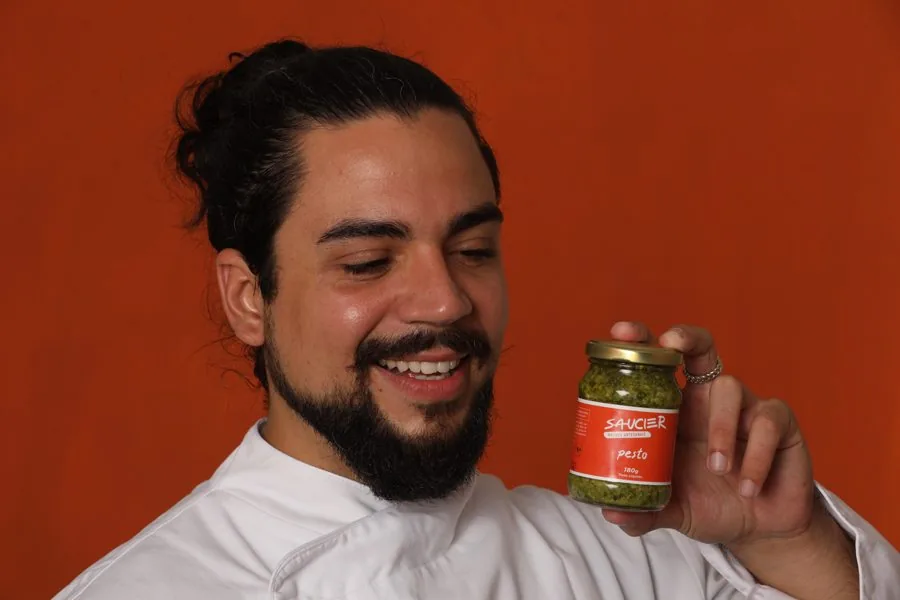

Se você chegou até aqui, é porque em algum momento pensou "eu topo compartilhar isso". E olha, isso significa muito pra mim.
A Saucier nasceu de um molho de família que virou negócio, de porta em porta, no Rio. 246 famílias levaram Saucier pra mesa antes de eu ensinar qualquer coisa. Hoje o curso é o jeito que encontrei de colocar essa técnica na mão de mais gente, sem depender só de mim pra isso acontecer.
E é exatamente aí que você entra. Minha intenção com o programa de afiliados não é só vender mais curso. É fazer com que quem acredita nisso também tenha uma vida com mais tempero: seja ensinando molho pra família, seja ganhando uma renda extra por indicar algo que você mesmo acredita.
Prosperidade que ninguém compartilha não cresce. A minha aposta é crescer junto com quem topar entrar nessa comigo.
Um abraço, Mauricio
O programa de afiliados do Curso Saucier de Molhos Artesanais roda pela Hotmart, a mesma plataforma que processa a compra do curso. É gratuito pra entrar, e você recebe comissão por cada venda feita com o seu link.
Cria uma conta gratuita na Hotmart (se ainda não tiver) e se candidata como afiliado do Curso Saucier de Molhos Artesanais.
A Hotmart gera um link único pra você, que rastreia toda venda feita a partir dele, com sua comissão calculada automaticamente.
Compartilha o link com quem você acha que se beneficiaria do curso. A cada venda aprovada, a comissão cai direto na sua conta Hotmart.
Ainda estou configurando o link direto de afiliação na Hotmart. Por enquanto, manda um e-mail que a gente libera seu acesso na mão.
O programa de afiliados da Saucier é gratuito e roda pela Hotmart, a mesma plataforma que processa a venda do Curso Saucier de Molhos Artesanais, um curso de R$290 com 10 módulos, 2 bônus e mais de 40 receitas de molho com ficha técnica. Você cria uma conta na Hotmart, se candidata como afiliado do curso, recebe um link único e ganha comissão a cada venda aprovada por esse link. A Hotmart calcula e paga. O afiliado que funciona aqui não é o que tem mais seguidor. É quem já cozinha e já indica receita pros amigos: criador de conteúdo de culinária, professor de gastronomia, nutricionista, dono de loja de temperos, e o próprio aluno, que indica porque fez. A Saucier nasceu vendendo molho de porta em porta no Rio, pra 246 famílias, antes de existir aula. Quem compartilha isso compartilha uma história de verdade.
Você cria uma conta gratuita na Hotmart, se candidata como afiliado do Curso Saucier de Molhos Artesanais e recebe um link único. Toda venda feita por esse link fica registrada na sua conta, com a comissão calculada pela própria Hotmart. Enquanto eu termino de configurar a afiliação automática, o acesso sai na mão: manda um e-mail pra contato@saucier.com.br que eu libero.
Não. Quem vende bem o curso é quem cozinha e já indica receita pros amigos, não quem tem audiência grande. Uma lista de WhatsApp de 40 pessoas que confiam no seu paladar vende mais que 10 mil seguidores frios. Professor de gastronomia, nutricionista, dono de loja de temperos e aluno do próprio curso são os perfis que mais fazem sentido aqui.
Nada. A conta na Hotmart é gratuita, a afiliação é gratuita e não existe mensalidade nem meta mínima. Você só investe o seu tempo de divulgação.
Quem define o percentual é a Hotmart junto comigo, e ele vai aparecer na ficha do produto quando a afiliação abrir. Ainda estou configurando isso. Se você quiser o número antes, manda um e-mail pra contato@saucier.com.br que eu respondo com o que já está fechado. O curso custa R$290, à vista no Pix ou em 12x no cartão, e a comissão incide sobre a venda aprovada.
Onde você já conversa sobre comida: Instagram, YouTube, blog, grupo de WhatsApp, lista de e-mail, aula presencial. O ebook gratuito Pesto pelo Mundo e as receitas do blog da Saucier servem de isca, porque entregam valor antes de pedir compra. Só não vale prometer resultado que o curso não dá nem usar a marca em anúncio pago sem falar comigo antes.
Deu pra mim. Entre 2020 e 2021 eu vendi molho artesanal por delivery no Rio de Janeiro, atendi 246 famílias e faturei cerca de R$47 mil, com recompra real. Os campeões foram o Pesto, com 381 unidades, o Chimichurri, com 177, e o Tempero da Vovó, com 169. O curso ensina a técnica e a ficha técnica de cada molho, e o bônus de criação de sabores é o que separa quem repete receita de quem tem produto próprio pra vender.